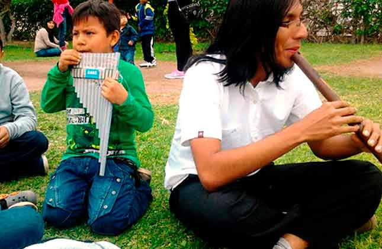
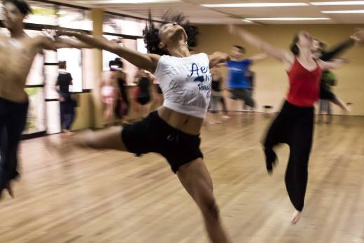
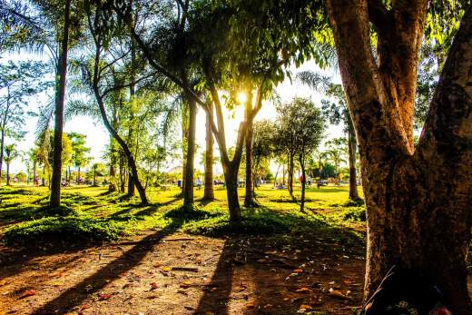

Enseñanza de Sikus y Quenas
Los niños se entretienen y aprenden a valorar lo nuestro mediante instrumentos a base de materiales plasticos
Ver más

Bailoterapia
Física
Proyecto de salud que se centra en el bienestar de las personas de la comunidad en general y en ...
ImplementándoseMetodología TiNi -
ANIA
Proyecto ecológico que concietizará a la población para el cuidado del medio ambiente
ImplementándoseProyecto de Investigación Social
Este proyecto se realizará con la finalidad de conocer la problematica...
Muy pronto

Campaña de Forestación Comunal
Encontrarás todo lo relacionado a este proyecto muy pronto, será impresionante esperalo...
Muy prontoEntrevistas de Analisis coyuntural
Encontrarás todo lo relacionado a este proyecto muy pronto, será impresionante, esperalo...
Muy pronto